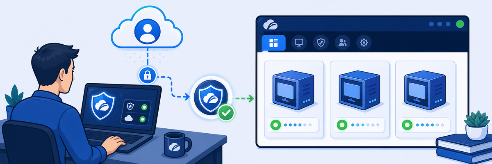

ZCC enrollment ties a device to a specific ZIdentity tenant and user. Until enrolled, no ZIA policy applies and no ZPA private apps are accessible — the device is invisible to the platform.
- When ZCC logs into ZIdentity using student@FQDN, what two things is ZIdentity determining on the user's behalf?
- Why does "Internet Security: ON" appear in ZCC but the user never configured a ZIA policy?
- What would happen if a student enrolled ZCC but their user account had no ZIA service entitlement assigned?
Scenario: Start your Skytap pod, connect to the Corp: Client PC VM, access the ZIdentity landing page, and verify that Zscaler Client Connector is enrolled and active for both Internet Security and Private Access.

Task 1.1 — Start the Skytap Lab Environment
1 Start and connect to the lab pod
- Log in to the Skytap portal using the credentials from your Lab Access Instructions.
- Open your assigned lab environment and click Run to start all VMs.
- Wait until all VMs show status Running before proceeding.
- Click the Corp: Client PC VM thumbnail to open its console.
- Log in as
student/Admin-123!.
Task 1.2 — Access ZIdentity Landing Page
2 Log in to ZIdentity
- Open a browser on the Corp: Client PC and navigate to the ZIdentity Landing Page URL from your Lab Access Instructions (e.g.
https://zsXXXX.safemarch.zslogin.net). - Enter
student@<Student FQDN>and click Next. - Enter your <Session Password> and click Sign In.
- Verify the ZIdentity tile dashboard loads, showing tiles for: Zscaler Internet Access, Zscaler Private Access, Zscaler Digital Experience, Zscaler Client Connector, ZIdentity Administration, and others.
Note: The ZIdentity landing page URL is unique to your tenant. It follows the pattern https://zsXXXX.safemarch.zslogin.net where XXXX is your student number.
Task 1.3 — Verify Zscaler Client Connector
3 Check ZCC enrollment status
- ZCC is pre-installed on the Corp: Client PC. Click the ZCC icon in the system tray to open it.
- If ZCC is not yet enrolled, click Login, enter
student@<Student FQDN>, click Next, enter <Session Password>, and click Sign In. - Wait for ZCC to complete enrollment (may take 1–2 minutes).
- Verify in the ZCC window:
- Internet Security Service Status: ON
- Private Access Service Status: ON
- Network Type: Off-Trusted Network
- Username:
student@<Student FQDN>
Result: Both Internet Security and Private Access show ON. ZCC Tunnel Version shows v2.0-DTLS. This confirms the student user is enrolled and traffic is being forwarded through the Zscaler cloud.